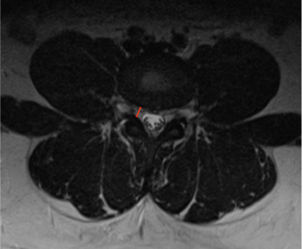

Adapted from: Feger J, Er A, Yap J, et al. Lumbar spine protocol (MRI). Reference article, Radiopaedia.org (Accessed on 01 Jan 2026) https://doi.org/10.53347/rID-147093
1) Description of Measurement
Lateral recess width (also termed lateral recess depth) quantifies the available space for the traversing nerve root between the posterior vertebral body/disc complex and the superior articular facet. This is the most common site of nerve root compression in degenerative lumbar spinal stenosis and is particularly sensitive to facet hypertrophy, ligamentum flavum thickening, and disc bulge.
This measurement directly reflects the risk of radiculopathy and complements central canal CSA in evaluating symptomatic stenosis.
2) Instructions to Measure
3) Normal vs. Pathologic Ranges
Key points:
4) Important References
Spinnato P, Petrera MR, Parmeggiani A, et al. A new comprehensive MRI classification and grading system for lumbosacral central and lateral stenosis: clinical application and comparison with previous systems. Radiol Med. 2024 Jan;129(1):93-106. doi: 10.1007/s11547-023-01741-3.
Caprariu R, Oprea MD, Poenaru DV, Andrei D. Correlation between Preoperative MRI Parameters and Oswestry Disability Index in Patients with Lumbar Spinal Stenosis: A Retrospective Study. Medicina (Kaunas). 2023 Nov 14;59(11):2000. doi: 10.3390/medicina59112000.
Goni VG, Hampannavar A, Gopinathan NR, et al. Comparison of the oswestry disability index and magnetic resonance imaging findings in lumbar canal stenosis: an observational study. Asian Spine J. 2014 Feb;8(1):44-50. doi: 10.4184/asj.2014.8.1.44.
5) Other info....
Lateral recess stenosis is often the primary driver of unilateral leg symptoms.
Should be evaluated with:
Central canal diameter may appear preserved even when lateral recess width is critically narrowed; therefore this measurement is essential in symptomatic patients.